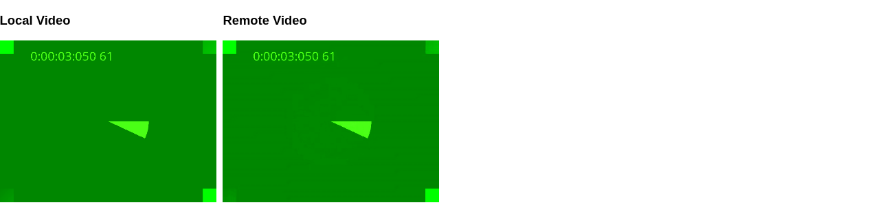
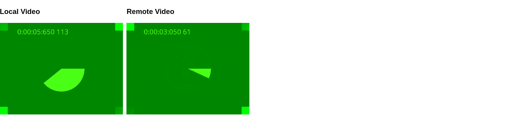

跑通VP8视频回声：第一条媒体轨道与收发证据
先分清这两件事：Local Video有画面，只证明本地采集和预览；Remote Video收到并解码出Rust回送的视频，才是本课目标。你只开一个浏览器页面，不用Alice、Bob两页聊天。
本课约30–40分钟。运行与页面检查10分钟，读媒体路径10分钟，证据卡与自测10–20分钟。还没有你的15–18课运行或答题反馈，本课不假定你已经跑通。唯一成果是一张可以说明“视频成功到哪一步”的证据卡，不加新聊天功能。
上游固定提交：f1b59bf6e85fa529dc0c8ed94a91e17a00cd8afa。本课不打18课补丁，不改上游原例，不下载不存在的19课Rust补丁。原例的Echo路径只回送视频，不是音频回声。
2026-11-26 JST已在云端Linux 6.12.113+、rustc/cargo 1.100.0、Chrome 157.0.8103.50验证两轮。使用Chrome合成摄像头，不是真人摄像头，也不是视频文件播放。Windows、音频、公网穿透和性能均未验收。下面的Windows步骤供你操作，不是Windows成功记录。
上一课：应用层ACK · 目录 · 本课脱敏验证摘要 · 已执行过的两阶段统计脚本
1. 先跑原例，再区分本地与远端
1.1 在全新目录运行
以下命令由你在Windows 11 PowerShell执行。沿用已有Git、Rust、Chrome，不在这一课重配系统环境。目录存在就停止，不切换或覆盖你原来的工程。这里用新目录，避免继承18课的聊天补丁。
$ErrorActionPreference = "Stop"
$root = Join-Path $HOME "rustrtc-0019-video-echo"
if (Test-Path $root) { throw "目录已存在，请换全新目录名，不要覆盖。" }
git clone https://github.com/restsend/rustrtc.git $root
if ($LASTEXITCODE -ne 0) { throw "克隆失败，停止。" }
Set-Location $root
$sha = "f1b59bf6e85fa529dc0c8ed94a91e17a00cd8afa"
git checkout --detach $sha
if ($LASTEXITCODE -ne 0) { throw "固定提交失败，停止。" }
if ((git rev-parse HEAD).Trim() -ne $sha) { throw "提交不符，停止。" }
cargo +1.100.0 build --example echo_server
if ($LASTEXITCODE -ne 0) { throw "构建失败，先保留第一条错误。" }
cargo +1.100.0 run --example echo_server
+1.100.0选中云端实际编过的工具链。若本机没有这个工具链，先停止并核对本机工具链，不把本课写成安装教程。此提交使用edition 2024；本轮没有测试其他最低Rust版本，不能把某个依赖的最低版本当成整个工程的保证。
从仓库根目录运行。终端应出现监听 http://127.0.0.1:3000 的提示。云端本轮实际监听时间为2026-11-26 02:06:32.044978 JST，构建退出码为0。原库有三条弃用警告，不是本课改了依赖。
若3000端口占用，先检查是不是自己先前开的聊天或Echo服务。关闭自己确认的旧服务再启动，不结束不认识的进程，也不要把旧聊天页误当成本轮页面。
1.2 打开正确的模式
- 打开
http://127.0.0.1:3000/。页面标题应是RustRTC Echo Demo。 - 模式选 Data Channel + Local Cam Echo，其值为
echo。 - 如果要同时做第4节统计练习，先读第4.1节，在点击前安装统计捕获脚本。
- 点击 Start Connection。允许当前本机页面使用摄像头。
- 分别观察 Local Video 和 Remote Video，不要只看一个画面。
页面也有Send按钮，那是文字DataChannel演示，不是发送视频的开关。不要照搬聊天页的Connect/Disconnect按钮名字。重新做一次时，刷新页面后从头开始；统计捕获脚本也需重新安装。
页面真实调用的是 getUserMedia({ video: true, audio: false })。没有音频m行，也没有本课的人声回声。摄像头失败时，页面会加一个recvonly视频transceiver作为fallback。这不等于Rust会凭空制造本地摄像头画面。先解决本地采集，再验证这条采集轨道的回声。
根页面使用编译时嵌入。只修改HTML却不重新编译，不保证浏览器拿到新页面。本课不修改它。来源：根页面58–60行、页面采集与fallback 104–119行。
图1 · 路径示意，不是抓包或耗时图 浏览器 ── HTTP POST /offer、answer ── Rust 浏览器摄像头 → 编码VP8 → SRTP上行 → Rust 浏览器远端元素 ← 解码VP8 ← SRTP下行 ← Rust回送 本地元素 ← 本地采集流，仅是预览 DataChannel文字是并列路径，不是视频的容器。
2. 用本轮SDP确认收发对象
2.1 看answer，不猜PT
以下是本轮真实SDP的脱敏截取。[port]是删掉实际端口后的标记，不能把这段当成可部署或可解析的完整SDP。ICE凭证、指纹和地址省略了。完整offer还列了其他编码，这里没有假装它们不存在。
# session-a offer的相关行，截取且已脱敏
m=video [port] UDP/TLS/RTP/SAVPF 96 97 102 103 104 107 108 109 114 115 116 117 39 40 45 46 98 99 100 101 118 119 120
a=mid:0
a=sendrecv
a=rtpmap:96 VP8/90000
a=rtpmap:97 rtx/90000
a=fmtp:97 apt=96
# session-a answer的相关行，截取且已脱敏
m=video [port] UDP/TLS/RTP/SAVPF 96 97
a=setup:passive
a=mid:0
a=sendrecv
a=rtcp-mux
a=rtpmap:96 VP8/90000
a=rtpmap:97 rtx/90000
a=fmtp:97 apt=96
a=ssrc:5002 cname:rustrtc-cname-5002
本轮视频段实际被接受，端口不是0。answer保留96的VP8和97的RTX，不是“answer一定只留一个PT”。apt=96说明这路RTX关联PT96。本课只比较主视频SSRC，不把RTX当成另一份完整视频，也不展开重传实现。
VP8/90000中的90000是RTP时间戳时钟率，不是每秒发送90000帧。96来自本次映射，不是VP8固定编号。RFC7741自己的SDP例子用98。方向sendrecv允许双向，但仍需运行证据；answer不是ICE、DTLS或解码已经成功的证明。
本轮codec统计中，COT01_96与CIT01_96分别关联上行和下行，二者的 mimeType=video/VP8、payloadType=96、clockRate=90000。不要只凭某个包里PT=96就给未知会话判成VP8。
来源：脱敏SDP记录、RFC7741 §4.1、§6.2.1及示例、RFC3264 §6.1。
2.2 本地流与接收流不是同一份绑定
页面先把采集流绑给Local Video，再把轨道交给连接：
if (mode === 'echo' || mode === 'video') {
try {
const stream = await navigator.mediaDevices.getUserMedia({ video: true, audio: false });
document.getElementById('localVideo').srcObject = stream;
stream.getTracks().forEach(track => pc.addTrack(track, stream));
远端元素在接收事件里绑定另一份流：
pc.ontrack = (e) => {
log("Received remote track: " + e.track.kind);
if (e.track.kind === 'video') {
document.getElementById('remoteVideo').srcObject = e.streams[0];
}
这两个原文摘录分别来自页面104–108行和94–98行。它们展示的是采集、addTrack和ontrack，不是独立完整程序。
本轮验证了两元素不是同一个流，Remote Video绑定接收轨道，inbound统计中的trackIdentifier对应那条远端轨道。ontrack只证明接收轨道对象出现，不单独证明已经有可解码视频帧。
3. 读Rust：回送负载，不把VP8解成像素
3.1 先确定进了哪一条分支
match payload.mode {
Mode::Echo => start_echo(pc.clone(), vp8_pt).await,
Mode::Video | Mode::VideoOnly => start_video_playback(pc.clone(), vp8_pt).await,
Mode::Datachannel => {
// Do nothing for video
}
}
来源：examples/echo_server.rs 204–210行。Echo调用 start_echo。Video/VideoOnly走文件播放函数，不是本课路径。本轮请求的 mode=echo，服务日志也记录Echo。
async fn start_echo(pc: PeerConnection, vp8_pt: u8) {
let transceivers = pc.get_transceivers();
for transceiver in transceivers {
if transceiver.kind() != rustrtc::MediaKind::Video {
continue;
}
transceiver.set_direction(rustrtc::TransceiverDirection::SendRecv);
来源：226–233行。PeerConnection取出transceiver，过滤非Video，再设置SendRecv。因此原例不能直接当成音频回声。这里也不是把上一课聊天broadcast换个消息类型。
3.2 收到一条轨道，建一条回送轨道
let (sample_source, outgoing_track, _) = media::sample_track(MediaStreamKind::Video, 120);
let ssrc = 5000 + transceiver.id() as u32;
let sender = rustrtc::peer_connection::RtpSender::builder(outgoing_track.clone(), ssrc)
.stream_id("stream".to_string())
.params(rustrtc::RtpCodecParameters {
payload_type: vp8_pt,
name: "VP8".to_string(),
clock_rate: 90000,
channels: 0,
})
.build();
来源：259–270行。media::sample_track给出样本入口和输出轨道，RtpSender::builder设置本例发送参数。120是传给sample_track的参数，不是VP8的PT或视频帧率。本轮不靠这个数字推断性能。
发送端的SSRC由 5000 + transceiver.id()生成，不直接沿用浏览器上行SSRC。本轮session-a上行是729981910，下行主路是5002；session-b上行是2189810431，下行主路是5004。只能对同一个方向、同一个统计对象与SSRC比较前后值。
下面是接收循环中的连续原文摘录，省略了外层任务和错误分支，不是可单独编译的程序：
match incoming_track.recv().await {
Ok(sample) => {
let is_empty = match &sample {
MediaSample::Video(f) => f.data.is_empty(),
MediaSample::Audio(f) => f.data.is_empty(),
};
if is_empty {
continue;
}
// Modify sample to strip extensions and ensure PT matches
let mut sample = sample;
if let MediaSample::Video(ref mut f) = sample {
// Filter out non-VP8 packets (e.g. RTX)
if let Some(pt) = f.payload_type
&& pt != vp8_pt
{
info!("Dropping video packet with PT: {}", pt);
continue;
}
// Strip extensions to avoid sending bad transport-cc
f.header_extension = None;
}
if let Err(err) = sample_source.send(sample) {
warn!("Video echo forwarder stopped: {}", err);
break;
来源：297–323行。incoming_track.recv().await拿样本，空数据跳过；视频样本若标了其他PT就跳过；清掉header_extension，再交给sample_source。这里只描述这个固定示例的处理，不推荐所有媒体转发程序都删除头扩展。
3.3 MediaSample这个名字不保证里面已经是像素
此提交的默认视频depacketizer是 PassThroughDepacketizer。MediaSample::from_rtp_packet把RTP负载放进 VideoFrame.data，width、height为0，像素格式为Unspecified。这个对象在此路径不是解码后的640×480像素，也不保证每个sample就是一幅完整VP8图像。它携带的是这条RTP负载及相关元数据。
回送还会重新组织RTP头。发送循环清掉样本的sequence_number，再交给发送端自己的计数器。库会在Rust这个WebRTC端点处理收发方向的SRTP；它不是把线上的加密包原封不动发回来。本轮没有抓线上序号，不能把这项源码结论包装成序号抓包对比。
来源：默认depacketizer 256–262行、MediaSample与VideoFrame 166–199行、重新组包116–161行、发送循环7900–7910行。
图2 · 当前固定源码的处理层次示意 浏览器：摄像头 → VP8编码 → RTP/SRTP Rust接收：SRTP处理 → RTP负载 → MediaSample::Video Echo任务：PT过滤、清头扩展 → sample_source Rust发送：自己的SSRC和序列号 → RTP/SRTP 浏览器接收：安全检查 → VP8解码 → 远端视频元素 不是：Rust把VP8解成像素，再重新编码VP8。
4. 取得这一个连接的真实证据
4.1 先安装捕获，再点Start Connection
原页面的 pc 是start函数内的局部变量，不是 window.pc。直接复制 window.pc.getStats()不能用于这个原页。
下载已执行过的两阶段脚本。它是两次执行的表达式记录，不要把整个文件一次粘贴执行。前半段必须在连接创建之前执行，后半段必须在点击之后执行。
- 刷新本机Echo页，先不要点击Start Connection。
- 打开Chrome开发者工具Console，确认是当前本机Echo页面的控制台。
- 只执行下面第一段，保留结果。它包住构造函数，把随后创建的连接保存起来，不修改Rust代码。
(() => {
const Orig = window.RTCPeerConnection;
function Wrapped(config) {
const pc = new Orig(config);
window.__rustrtcPcs = window.__rustrtcPcs || [];
window.__rustrtcPcs.push(pc);
return pc;
}
Wrapped.prototype = Orig.prototype;
Object.setPrototypeOf(Wrapped, Orig);
for (const key of Object.getOwnPropertyNames(Orig)) {
if (key === "prototype" || key === "length" || key === "name") continue;
const desc = Object.getOwnPropertyDescriptor(Orig, key);
if (desc) Object.defineProperty(Wrapped, key, desc);
}
window.RTCPeerConnection = Wrapped;
window.__pcHookInstalled = true;
return {
pageHasWindowPc: Object.prototype.hasOwnProperty.call(window, "pc"),
typeofPc: typeof pc
};
})();
本轮此时返回 pageHasWindowPc: false、typeofPc: "undefined"。随后点击Start Connection，等待采集和远端轨道出现，再单独执行第二段：
const pcs = window.__rustrtcPcs || [];
const pc = pcs[0];
const report = await pc.getStats();
这里的 pc 是你新定义的Console变量，不是原页公开了window.pc。输入 report查看刚才的RTCStatsReport。再采样时执行 await pc.getStats()，不要重复声明这些const；原来的report变量不会自动变成新快照。刷新会丢掉捕获脚本，必须重新从第一段开始。找不到连接时，先查是不是安装得太晚，不要随意选择其他标签页的连接。
脚本在云端真实Chrome中执行过。Console的手动步骤和PowerShell一样供你本机实践，未冒称Windows实测。只向刚启动的本机教学页面执行自己核对过的代码。
4.2 只比较同一条主视频流
展开报告，找 type=outbound-rtp、kind=video和对应的 inbound-rtp。记录id、SSRC、codecId，再通过codecId找到video/VP8。隔开两个时刻抄下累计值。不要拿transport的总字节数替代视频RTP字节数，不把RTX与主路混算。
本轮session-a两个时刻为 02:07:44.295 → 02:07:46.807 JST，日期均为2026-11-26。以下是实际累计值，不是模拟数据：
| 统计对象 | 字段 | t1 | t2 | 差值 |
|---|---|---|---|---|
| 上行SSRC729981910 | packetsSent | 13 | 85 | 72 |
| 同一上行 | bytesSent | 8516 | 67320 | 58804 |
| 同一上行 | framesEncoded | 5 | 56 | 51 |
| 下行SSRC5002 | packetsReceived | 9 | 81 | 72 |
| 同一下行 | bytesReceived | 8512 | 67316 | 58804 |
| 同一下行 | framesDecoded | 2 | 55 | 53 |
一幅VP8图像可以分进多个RTP包。包数和解码帧数不是同一种单位，不能用72减53推断丢包。见RFC7741 §4.4。
t2的Remote Video为640×480，paused=false，totalVideoFrames=55。真实采样确认它绑定接收轨道，两元素不是同一个流。计数增长与元素呈现相互补充，不能只拿Local Video有画面作结论。
截图来自云端Chrome合成摄像头，不是用户摄像头。可打开原图放大。画面内的两端时间不是精确测得的回声时延，不能据此报性能。

本轮transport统计显示ICE/DTLS connected，选中候选对为host/host、UDP、nominated=true、state=succeeded。服务端没有成功DTLS握手日志，不给它补造一行。本轮dtlsCipher包含AES-GCM，而srtpCipher是 SRTP_AES128_CM_HMAC_SHA1_80，再次说明两者不是看到一个就能猜另一个。
页面配置了公共STUN服务器，不能沿用聊天原例“没配STUN”的说法；本轮实际选中host候选对。某候选出现不等于被选中，本地验证也不保证任意跨公网组合都能通。来源：页面62–65行。
第二轮session-b使用新Chrome会话，没有做暂停。02:07:50.691 → 02:07:53.203 JST，上行SSRC2189810431的packetsSent为18→90、framesEncoded为7→57；下行SSRC5004的packetsReceived为14→86、framesDecoded为2→56。远端再次640×480、paused=false。这是独立复测，不是把session-a的后半段改个名字。

session-a脱敏统计 · session-b脱敏统计。这些文件只保留本课需要的字段，没有地址、真实凭证或完整SDP。
5. 暂停反例与三个排错场景
5.1 真实反例：远端元素停播，RTP仍在流动
session-a成功之后，云端在 02:07:46.907 JST只调用Remote Video元素的pause方法，没有停止本地采集，也没有关闭连接。比较02:07:46.906与02:07:49.420 JST：
| 观察对象 | 暂停前 | 暂停后 |
|---|---|---|
| Remote Video paused | false | true |
| 呈现回调累计次数 | 46 | 46 |
| 元素totalVideoFrames | 57 | 57 |
| 元素webkitDecodedFrameCount | 57 | 57 |
| inbound-rtp framesDecoded | 57 | 107 |
| inbound-rtp packetsReceived | 85 | 168 |
| outbound-rtp framesEncoded | 58 | 108 |
| inbound-rtp pauseCount | 0 | 0 |
| 本地采集、连接 | live、connected | live、connected |

远端图内停在0:00:03:050，本地图内已到0:00:05:650。这次暂停让元素的呈现停住，inbound-rtp解码计数仍在增长。不能把framesDecoded增长写成页面仍在出画。元素上的webkitDecodedFrameCount又是另一种计数，不能把它和RTCStats里的framesDecoded混成一个字段。
pauseCount不是JavaScript元素pause调用次数。W3C按接收视频呈现间隔及后续呈现定义这个指标。本轮短暂暂停中它和totalPausesDuration均保持0，不能据此否认paused=true。规范中的framesRendered在本轮Chrome的inbound对象中没有出现，没有字段不等于值为0。
来源：W3C framesDecoded、pauseCount。本课只报告该Chrome里观察到的呈现回调、totalVideoFrames和webkit字段，不把所有浏览器保证成相同行为。
图3 · 证据分层示意 本地预览有画面 → 本地采集与绑定 answer接受视频 → 描述层允许收发 ICE/DTLS已建立 → 路径与安全传输条件 下行视频RTP增长 → 有对应媒体接收 framesDecoded增长 → 有视频解码 远端元素播放推进 → 页面呈现继续 每一项各需证据，不由上面一项自动推出。 第18课ACK属于应用处理证据，不能替代这里的媒体证据。
5.2 三种情况怎么判断
场景A：只有Local Video有画面。这是分析场景，不是本轮失败日志。先查是不是echo、采集轨道是否加到连接、answer是否接受、ICE/DTLS与下行统计。不能因为Send文字有回声就宣布视频也成功。
场景B：连接显示connected，上行增长，下行主路为0。这是分析场景。先确认同一连接、正确的inbound-rtp对象及主SSRC，再看offer/answer与Rust实际Echo分支。它还不能证明Rust收到了这个上行负载，更不能证明解码成功。不要立即改编解码器或把所有警告都认成致命错误。本轮出现RTX相关警告，但VP8主路仍有解码帧。
场景C：下行与framesDecoded增长，远端不动。本轮暂停是其中一个已复现原因。先查元素绑定、paused、尺寸和播放/呈现状态，不急着重启ICE。这也不是“所有黑屏都只用play修好”，解码前的安全失败或码流问题需要不同证据。
6. 交一张证据卡，独立自测
6.1 唯一动手成果
不改Rust，不新增功能。按第1节运行，在同一连接里采两次统计。用你自己的值填写下面这张卡。若还没运行，也能先用本课session-a数据完成一次纸面判读，但要标“纸面”，不能写成自己已跑通。
| 项目 | 你要填写的证据 |
|---|---|
| 版本与环境 | 上游SHA、实际系统/工具链、真实运行或纸面 |
| 模式与采集 | echo、video:true/audio:false、本地轨道是否live |
| 协商 | answer中实际PT→编码/时钟，收发方向 |
| 路径与安全 | 选中候选对、ICE和DTLS的证据来源；不可见就写不可见 |
| 上行 | 同一id/SSRC，t1/t2的包数与编码帧数 |
| 下行 | 同一id/SSRC，t1/t2的包数与解码帧数 |
| 元素 | Remote Video是否绑定接收轨道，尺寸与paused/播放推进 |
| 结论边界 | 已证实哪一步，哪些仍未测，是否误拿Local Video作结论 |
自己的数值不需要和云端相同。SSRC、累计计数和耗时不同不等于失败。不要凭这两份样本计算“性能提升”或精确回声延迟。分享卡片前，删掉ICE密码、ufrag、地址和完整SDP；本课不需要这些秘密来批改。
6.2 八道自测
先遮住答案。每题都可单独判断，不需要等待聊天回复下一题。
第1题
Local Video在动，DataChannel也Open。能据此证明视频经过Rust回送吗？缺什么？
显示第1题答案
不能。需补同一连接的下行视频接收、解码和远端元素证据。本地预览与文字通道成功都不能替代这条媒体路径。
第2题
读出本轮answer的两个PT映射与90000的含义。换成未知会话，还能照抄96这个结论吗？
显示第2题答案
本轮96对应VP8/90000，97是关联96的RTX。90000是RTP时钟率，不是帧率；未知会话仍需它自己的协商映射。
第3题
Rust收到MediaSample::Video，data非空。能认为里面是完整640×480像素图吗？
显示第3题答案
不能。此路径默认直通RTP负载，VideoFrame的宽高为零、格式未指定。它不是像素解码结果，也不保证一份样本就是完整图像。
第4题
计算session-a下行包数、字节数和解码帧数的增量。包数增量与帧数增量不同，能直接做减法判丢包吗？
显示第4题答案
下行分别增加72包、58804字节和53个解码帧。包与图像帧不是同一种单位，一幅图像可用多个包，不能用两者相减推断丢包。
第5题
你刚打开原页，还没安装捕获就点了Start。window.pc是undefined，该怎样重新采样？
显示第5题答案
刷新后先安装构造函数捕获，再点击Start。原页的pc位于函数内部；随后读取捕获数组中的连接，不凭空假定页面公开了window.pc。
第6题
下行framesDecoded为57→107，远端paused=true，呈现回调46→46。分别指出仍在推进与已经停住的层。
显示第6题答案
该接收流的解码仍在增加，远端元素的呈现已经停住。解码不等于元素播放，本轮连接与本地采集也没有因元素暂停而关闭。
第7题
本轮pauseCount仍为0，能否推翻元素paused=true的观察？为什么？
显示第7题答案
不能。该统计不是元素pause调用次数，有自己的呈现间隔与更新条件。应读取元素状态，并保留本轮不同计数表现的边界。
第8题
为这次验收写两句话：一条已证实的结果，一条不能宣称的结论。必须包含环境与媒体范围。
显示第8题答案
云端Linux与Chrome合成摄像头的两轮视频回声已通过。不能据此宣称Windows、真人摄像头、音频、公网穿透或性能也已验收。
6.3 间隔回忆与来源
明天先不看代码，画出Local Video、Rust接收/回送、Remote Video三者关系，写出你会保存的三项运行证据。隔一天对照第18课：应用ACK、视频解码、元素播放各说明什么，不能互相替代什么。可以把你的证据卡发来，再针对实际缺口继续，不因课程已发布就自动记为掌握。
主读源码：start_echo 226–334行。先读过滤、发送轨道和接收循环，不展开simulcast与关键帧反馈专题。
其他核对来源：
- RFC3550 §5.1：PT、seq、timestamp、SSRC的边界。
- RFC3264 §6.1：answer媒体与方向，不能把描述当运行成功。
- RFC7741 §4.1与§6.2.1：VP8的SDP名称与90000时钟，PT不是固定96。
- RFC8831 §1：SRTP媒体与SCTP/DTLS非媒体数据并列。
- W3C getStats：连接统计报告；inbound视频统计、transport统计：字段含义与实现可见性。
- 本轮脱敏验证摘要：真实两轮结果、截图和未测范围。不是用户本机运行记录。